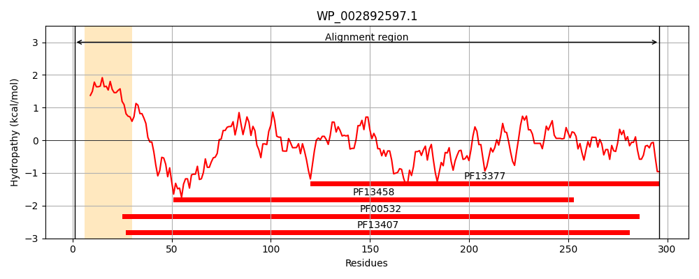
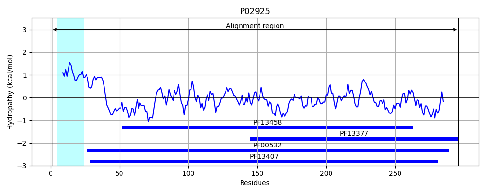
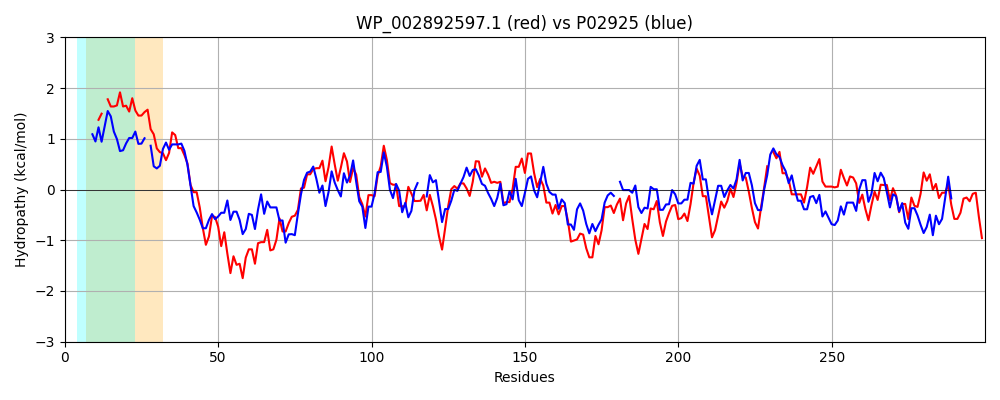

Hit Accession: P02925
Hit TCID: 3.A.1.2.1
Hit Description: gnl|BL_ORD_ID|8234 gnl|TC-DB|P02925|3.A.1.2.1 D-ribose-binding periplasmic protein precursor - Escherichia coli.
Mach Len: 300
e:0.000000
Query TMS Count : 1
Hit TMS Count: 1
TMS-Overlap Score: 0.950000
Predicted Substrates:CHEBI:10410;beta-D-ribopyranose
BLAST Alignment:
Score: 379 , Bit scores: 150 bits, E-value: 1.5e-43, Alignment length: 300, Percentage identity: 31
Query: 1 MNIKK--TIVASL-LACMLPAVVMAKDVSIGVSMALFDDNFLTILRTSMQKEMKKDGVKSQIEDAKGDVSQQLQQVQNFIGQGVDAIIVNPVDTNAVKPIMDQATKAGIPLVFVNRRPQAELTDKMAYVGSDSILAGRLQMEALAKAMNGKGNVAILLGDLANESTRDRTKGVEEVVAKYPNIKIVQKQTAKFTRNDAVDVVSNWMTSGEDIQAIASNNDEMAIGALQAL-GKNPNHILIAGVDGTPDALQMLKSGKMIATIFQDAKGQGEGAVDAAIKLANGEKVEKIIDVPYQLITKE 296
MN+KK T+V+++ L+ + A MAKD +I + ++ ++ F L+ QKE K G + D++ + +++L VQ+ +G +++NP D++AV + A +A IP++ ++R QA + ++++ SD++L G++ + +AK V L G + R+R +G ++ VA + ++ Q A F R ++V+ N +T+ D+QA+ + NDEMA+GAL+AL + +++ G DGTPD + + GK+ ATI Q G V+ A K+ GEKV+ V +L+ K+
Sbjct: 1 MNMKKLATLVSAVALSATVSANAMAKD-TIALVVSTLNNPFFVSLKDGAQKEADKLGYNLVVLDSQNNPAKELANVQDLTVRGTKILLINPTDSDAVGNAVKMANQANIPVITLDR--QATKGEVVSHIASDNVLGGKIAGDYIAKKAGEGAKVIELQGIAGTSAARERGEGFQQAVAAH-KFNVLASQPADFDRIKGLNVMQNLLTAHPDVQAVFAQNDEMALGALRALQTAGKSDVMVVGFDGTPDGEKAVNDGKLAATIAQLPDQIGAKGVETADKVLKGEKVQAKYPVDLKLVVKQ 296 | Protein Hydropathy Plots: |
|---|
|  |  |
Pairwise Alignment-Hydropathy Plot:
|
|---|
|  |